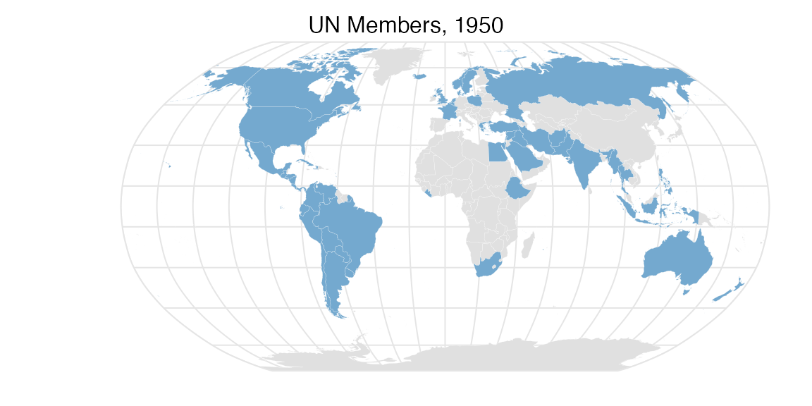
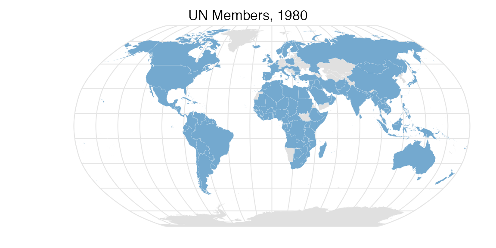
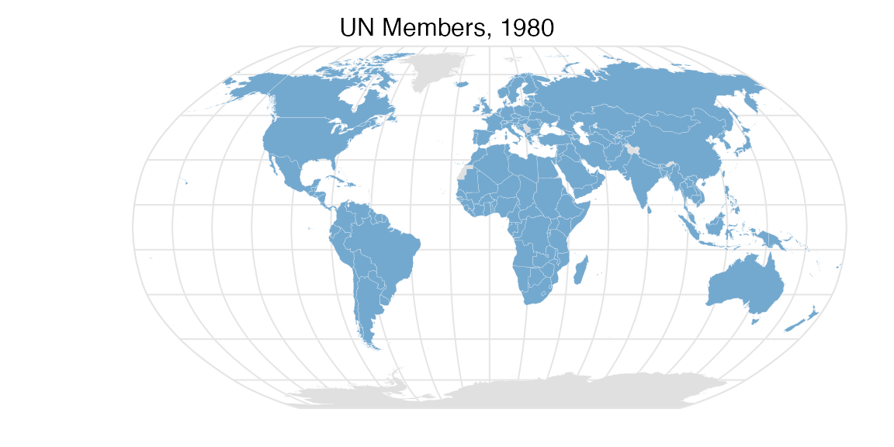

This vignette provides some geospatial visualizations using the IGO datasets (Pevehouse et al. (2020)) included in this package.
library(igoR)
# Helper packages
library(dplyr)
library(countrycode)
# Geospatial packages
library(sf)
library(giscoR)
library(tmap)Evolution of the composition of UN
The following maps shows the evolution of countries that are members of the United Nations.
First we should extract the data:
# Extract shape and project to Robinson
# See https://epsg.io/54030
robin <-
"+proj=robin +lon_0=0 +x_0=0 +y_0=0 +datum=WGS84 +units=m +no_defs"
world <-
gisco_get_countries() %>%
st_transform(robin)
un <- igo_search("UN", exact = TRUE)
# Extract three dates - some errors given that ISO doesnt have every COW Code
# Also join with world sf
UN1950 <-
igo_members("UN", 1950) %>%
mutate(ISO3_CODE = countrycode(ccode,
"cown",
"iso3c",
warn = FALSE)) %>%
inner_join(world, .)
UN1980 <-
igo_members("UN", 1980) %>%
mutate(ISO3_CODE = countrycode(ccode,
"cown",
"iso3c",
warn = FALSE)) %>%
inner_join(world, .)
UN2010 <-
igo_members("UN", 2010) %>%
mutate(ISO3_CODE = countrycode(ccode,
"cown",
"iso3c",
warn = FALSE)) %>%
inner_join(world, .)Now we are ready to plot with tmap:
# UN 1950----
tm_shape(world) +
tm_graticules(
labels.show = FALSE,
col = "grey90",
x = seq(-180, 180, 20),
y = seq(-90, 90, 20)
) +
tm_layout(
frame = FALSE,
earth.boundary = TRUE,
earth.boundary.color = "grey90",
main.title = "UN Members, 1950",
main.title.position = "center",
main.title.size = 1
) +
tm_polygons(col = "#E0E0E0",
border.col = "white",
lwd = 0.1) +
tm_shape(UN1950) +
tm_polygons(col = "#74A9CF",
border.col = "white",
lwd = 0.1)
# UN 1980----
tm_shape(world) +
tm_graticules(
labels.show = FALSE,
col = "grey90",
x = seq(-180, 180, 20),
y = seq(-90, 90, 20)
) +
tm_layout(
frame = FALSE,
earth.boundary = TRUE,
earth.boundary.color = "grey90",
main.title = "UN Members, 1980",
main.title.position = "center",
main.title.size = 1
) +
tm_polygons(col = "#E0E0E0",
border.col = "white",
lwd = 0.1) +
tm_shape(UN1980) +
tm_polygons(col = "#74A9CF",
border.col = "white",
lwd = 0.1)
# UN 2010----
tm_shape(world) +
tm_graticules(
labels.show = FALSE,
col = "grey90",
x = seq(-180, 180, 20),
y = seq(-90, 90, 20)
) +
tm_layout(
frame = FALSE,
earth.boundary = TRUE,
earth.boundary.color = "grey90",
main.title = "UN Members, 1980",
main.title.position = "center",
main.title.size = 1
) +
tm_polygons(col = "#E0E0E0",
border.col = "white",
lwd = 0.1) +
tm_shape(UN2010) +
tm_polygons(col = "#74A9CF",
border.col = "white",
lwd = 0.1)
Session Info
Details
#> R version 4.0.3 (2020-10-10)
#> Platform: x86_64-apple-darwin17.0 (64-bit)
#> Running under: macOS Catalina 10.15.7
#>
#> Matrix products: default
#> BLAS: /Library/Frameworks/R.framework/Versions/4.0/Resources/lib/libRblas.dylib
#> LAPACK: /Library/Frameworks/R.framework/Versions/4.0/Resources/lib/libRlapack.dylib
#>
#> locale:
#> [1] en_US.UTF-8/en_US.UTF-8/en_US.UTF-8/C/en_US.UTF-8/en_US.UTF-8
#>
#> attached base packages:
#> [1] stats graphics grDevices utils datasets methods base
#>
#> other attached packages:
#> [1] tmap_3.3 giscoR_0.2.2 sf_0.9-7 countrycode_1.2.0
#> [5] dplyr_1.0.3 igoR_0.0.0.9000
#>
#> loaded via a namespace (and not attached):
#> [1] tidyselect_1.1.0 xfun_0.20 purrr_0.3.4 lattice_0.20-41
#> [5] vctrs_0.3.6 generics_0.1.0 htmltools_0.5.1 stars_0.5-0
#> [9] viridisLite_0.3.0 yaml_2.2.1 base64enc_0.1-3 XML_3.99-0.5
#> [13] rlang_0.4.10 e1071_1.7-4 pkgdown_1.6.1 pillar_1.4.7
#> [17] glue_1.4.2 DBI_1.1.1 sp_1.4-5 RColorBrewer_1.1-2
#> [21] lifecycle_0.2.0 stringr_1.4.0 raster_3.4-5 ragg_0.4.1
#> [25] htmlwidgets_1.5.3 codetools_0.2-16 leafsync_0.1.0 memoise_1.1.0
#> [29] evaluate_0.14 knitr_1.30 crosstalk_1.1.1 parallel_4.0.3
#> [33] class_7.3-17 leafem_0.1.3 Rcpp_1.0.6 KernSmooth_2.23-17
#> [37] classInt_0.4-3 lwgeom_0.2-5 desc_1.2.0 leaflet_2.0.4.1
#> [41] abind_1.4-5 systemfonts_0.3.2 fs_1.5.0 textshaping_0.2.1
#> [45] png_0.1-7 digest_0.6.27 stringi_1.5.3 tmaptools_3.1-1
#> [49] grid_4.0.3 rprojroot_2.0.2 tools_4.0.3 magrittr_2.0.1
#> [53] tibble_3.0.5 dichromat_2.0-0 crayon_1.3.4 pkgconfig_2.0.3
#> [57] ellipsis_0.3.1 assertthat_0.2.1 rmarkdown_2.6 R6_2.5.0
#> [61] units_0.6-7 compiler_4.0.3References
Pevehouse, Jon CW, Timothy Nordstrom, Roseanne W McManus, and Anne Spencer Jamison. 2020. “Tracking Organizations in the World: The Correlates of War Igo Version 3.0 Datasets.” Journal of Peace Research 57 (3): 492–503. https://doi.org/10.1177/0022343319881175.